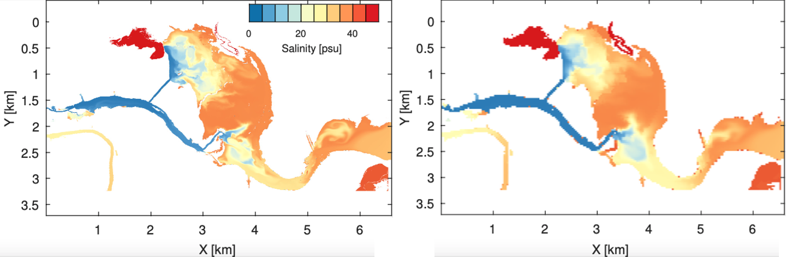
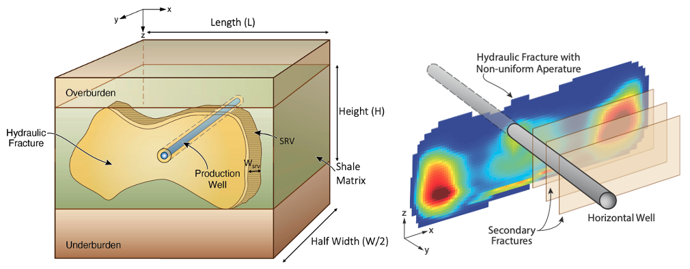

Zhi Li
This is the research website of Zhi Li. I develop high-performance numerical models to study fluid-related problems in the environment. Such models are often applied to large-scale natural domains, such as coastal wetlands and subsurface shale reservoirs. Fluid flow in the environment is often affected by multiple environmental factors with various spatial and temporal scales. From modeling perspective, the key challenge is how to capture the major physical processes, achieving reasonable simulation results, without spending unacceptable computational cost. With this aim, my research is inevitably interdisciplinary, involving fluid mechanics, hydrogeology, numerical methods and high-performance computing
(This site is still under construction...)
Research
Coastal Wetlands
I develop numerical models to simulate surface flow, surface-subsurface exchange and scalar transport in coastal wetlands. The focus is on (1) representing small-scale environmental processes in corase-grid models and (2) optimizing model coupling to enable fast 3D, field-scale simulation.
A subgrid topography model is designed to parametrize small-scale topographic features on much coarser grid cells. This method allows hydrodynamic simulation on efficient coarse grids without losing the small-scale flow-topography interactions. It is useful for shallow wetland simulations where water flow is strongly affected by the complex topography.
For more info:
10.1016/j.advwatres.2019.05.004 10.1016/j.advwatres.2019.103465A coupled 2D surface flow and 3D variably saturated subsurface flow model (Frehg) is developed. The purpose of developing Frehg is to model salintiy evolution in shallow wetlands that is affected by tidal intrusion, evaporation, surface-subsurface exchange, and the complex 3D topography. The codes of Frehg can be found on my Github repo.
Shale Reservoirs
I develop numerical models to simulate multiphase flow in porous media. Specifically, I focus on simulating water, gas and oil production from shale reservoirs, representing the complex fracture system in the multiphase flow model to achieve reasonable estimation of reservoir production.
One challenge in shale reservoir simulation (and perhaps any flow simulation of underground reservoirs) is to model the multiscale fracture network. Our approach is to model the primary hydraulic fractures using a geomechanics model (GEOS), and represent the secondary fractures as non-uniform dual-permeability elements. We found that the spatial heterogeneity of the fracture aperture is critical in matching the production data for shale reservoirs.
Publications
[9] (Under Review) Z Li, Three-dimensional coupled surface-subsurface simulation of salinity transport in shallow coastal marshes. (20XX) Water Resources Research
[8] (Under Review) Z Li, CS Sherman, MT Reagan, GJ Moridis, JP Morris, Effects of heterogeneous fracture aperture on multiphase production from shale reservoirs. (20XX) Transport in Porous Media
[7] X Shen, BR Hodges, R Li, Z Li, JL Fan, NB Cui, HJ Cai, Factors influencing distribution characteristics of total dissolved gas supersaturation at confluences. Water Resources Research (2021) 57 (6), e2020WR028760
https://doi.org/10.1029/2020WR028760
[6] Z Li, BR Hodges, Revisiting surface-subsurface exchange at intertidal zone with a coupled 2D hydrodynamic and 3D variably-saturated groundwater model. (2021) Water 13 (7), 902
https://doi.org/10.3390/w13070902
[5] JT Birkholzer, J Morris, JR Bargar, F Brondolo, A Cihan, D Crandall, H Deng, W Fan, W Fu, P Fu, A Hakala, Y Hao, J Huang, AD Jew, T Kneafsey, Z Li, C Lopano, J Moore, G Moridis, S Nakagawa, V Noel, M Reagan, CS Sherman, R Settgast, C Steefel, M Voltolini, W Xiong, J Ciezobka, A new modeling framework for multi-scale simulation of hydraulic fracturing and production from unconventional reservoir. (2021) Energies 14 (3), 641
https://doi.org/10.3390/en14030641
[4] Z Li, I Ozgen-Xian, FZ Maina, A mass-conservative predictor-corrector solution to the 1D Richards equation with adaptive time control. (2021) Journal of Hydrology 592, 125809
https://doi.org/10.1016/j.jhydrol.2020.125809
[3] Z Li, BR Hodges, On modeling subgrid-scale macro-structures in narrow twisted channels. (2020) Advances in Water Resources 135, 103465
https://doi.org/10.1016/j.advwatres.2019.103465
[2] Z Li, BR Hodges, Model instability and channel connectivity for 2D coastal marsh simulations. (2019) Environmental Fluid Mechanics 19 (5), 1309-1338
https://doi.org/10.1007/s10652-018-9623-7
[1] Z Li, BR Hodges, Modeling subgrid-scale topographic effects on shallow marsh hydrodynamics and salinity transport. (2019) Advances in Water Resources 129, 1-15